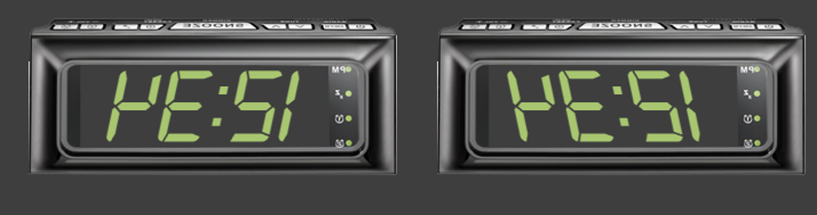

Exercise 5 - Interactive experiments
Contents
Exercise 5 - Interactive experiments#
Inside the exercise 5 repository is a 1-page article by Whitaker and McGraw (2000) who report a curious tilt illusion that I have recreated for you below.

Believe it or not, while the numbers in the two alarm clocks are tilted in opposite directions, they are tilted to the exact same degree. More curious still is that the illusion largely goes away if the stimuli are not plausible numbers (though depending on the conditions, it can be elicited with letters as well). See for yourselves!
{kind=link}
If we are going to figure out what causes this illusion, we need to start by measuring its strength. The exercise has two purposes. First, it serves as an example of a simple interactive experiment and is designed to help you cement some coding patterns we’ve been working on (loading in external files) while also teaching you some new things (how to use the mouse for responding). Second, it’s a nice illustration of how we go about measuring the strength of an illusion.
On each trial, the participant will view one of the “standard” images – numbers or letters presented in the normal or reversed orientation and tilting to the left or right.
The participants’ goal is to adjust the orientation of a small line positioned below the clock display such that it matches the orientation of the standard image. The extent Participants orientation of the gabor using the mouse wheel.
Your task is to fill in do_adjustment() with the code necessary to display the stimuli, update the orientation of adjusting_stim and write some data to a CSV file for later analysis.
Notice the function library we’ve placed in your starter code repository (my_first_function_library.py). Use it! Import functions by typing from my_first_function_library import X where X is the function you’d like to import. Separate multiple functions with a comma just like we do when importing the various parts of psychopy. You can import all of them with from my_first_function_library import *
Here is the code for getting mouse wheel movements (which are equivalent to scrolling on a trackpad, normally a two finger vertical swipe).
from psychopy import core, visual, prefs, event
win = visual.Window([800,600],color="white", units='pix')
myMouse = event.Mouse()
myMouse.setVisible(0)
num_wheel_turns_down=num_wheel_turns_up=0
while True:
wheelRel = myMouse.getWheelRel()[1]
if wheelRel>0.0:
num_wheel_turns_down+=1
print('wheel down: ', num_wheel_turns_up, num_wheel_turns_down)
elif wheelRel<0.0:
num_wheel_turns_up+=1
print('wheel up', num_wheel_turns_up, num_wheel_turns_down)
2022-10-05 09:24:20.400 python[47727:2051381] Warning: Expected min height of view: (<NSPopoverTouchBarItemButton: 0x7fd6e32ca600>) to be less than or equal to 30 but got a height of 32.000000. This error will be logged once per view in violation.
2022-10-05 09:24:20.401 python[47727:2051381] Warning: Expected min height of view: (<NSButton: 0x7fd6e4c42890>) to be less than or equal to 30 but got a height of 32.000000. This error will be logged once per view in violation.
2022-10-05 09:24:20.403 python[47727:2051381] Warning: Expected min height of view: (<NSPopoverTouchBarItemButton: 0x7fd6e4c43450>) to be less than or equal to 30 but got a height of 32.000000. This error will be logged once per view in violation.
2022-10-05 09:24:20.405 python[47727:2051381] Warning: Expected min height of view: (<NSPopoverTouchBarItemButton: 0x7fd6e4c48d00>) to be less than or equal to 30 but got a height of 32.000000. This error will be logged once per view in violation.
---------------------------------------------------------------------------
KeyboardInterrupt Traceback (most recent call last)
/Users/glupyan/gitRepos/psych750.github.io/notebooks/Exercise5-interactive.ipynb Cell 8 in <cell line: 9>()
<a href='vscode-notebook-cell:/Users/glupyan/gitRepos/psych750.github.io/notebooks/Exercise5-interactive.ipynb#W6sZmlsZQ%3D%3D?line=6'>7</a> num_wheel_turns_down=num_wheel_turns_up=0
<a href='vscode-notebook-cell:/Users/glupyan/gitRepos/psych750.github.io/notebooks/Exercise5-interactive.ipynb#W6sZmlsZQ%3D%3D?line=7'>8</a> while True:
----> <a href='vscode-notebook-cell:/Users/glupyan/gitRepos/psych750.github.io/notebooks/Exercise5-interactive.ipynb#W6sZmlsZQ%3D%3D?line=8'>9</a> wheelRel = myMouse.getWheelRel()[1]
<a href='vscode-notebook-cell:/Users/glupyan/gitRepos/psych750.github.io/notebooks/Exercise5-interactive.ipynb#W6sZmlsZQ%3D%3D?line=9'>10</a> if wheelRel>0.0:
<a href='vscode-notebook-cell:/Users/glupyan/gitRepos/psych750.github.io/notebooks/Exercise5-interactive.ipynb#W6sZmlsZQ%3D%3D?line=10'>11</a> num_wheel_turns_down+=1
File ~/anaconda3/envs/psych750/lib/python3.8/site-packages/psychopy/event.py:784, in Mouse.getWheelRel(self)
782 global mouseWheelRel
783 rel = mouseWheelRel
--> 784 mouseWheelRel = numpy.array([0.0, 0.0])
785 return rel
KeyboardInterrupt:
Your starter code has this code wrapped in a do_adjustment() function. We’ll go over it in class.
Part 1#
Grab a set of runtime variables using a GUI box as we did previously. You should have an error check built-in so you don’t overwrite an existing data file. Also use the saving state trick I showed you to load in the previous values you used, so if you ran subject tilt_103, that’s the value that comes up in the GUI box the next time you run. (this error check is already implemented in the function library as part of opening the results file for writing. Feel free to use it by attempting to open results file after grabbing the runtime variables. This way you don’t actually need to modify any code.. just use it!)
For the runtime variables, just use these:
Subject code
Random seed (controls the pseudo-random order)
Number of blocks (an integer – one controls how many times we go through the stimulus list)
Part 2#
Pass these runtime variables to generate_trials() so that it generates a subjCode_trials.csv trial file with the correct properties. This one’s very simple – just iterate through all the image files number of blocks times, in pseudo-random order (determined by the seed). The starter code for generate_trials() uses os.glob() to get a list of filenames inside the stimuli directory. Notice that the starter code for generate_trials() breaks up the fiename into its fields. Write these into appropriate columns in your trials file so that you can read them in and use them in your main script.
Tip
Add the following code to the bottom of generate_trials.py
if __name__=="__main__":
generate_trials({'subj_code':'test_subj1', 'seed':10, 'number_of_blocks':1}, order=['subj_code', 'seed', 'number_of_blocks'])
generate_trials({'subj_code':'test_subj2', 'seed':10, 'number_of_blocks':1}, order=['subj_code', 'seed', 'number_of_blocks'])
generate_trials({'subj_code':'test_subj3', 'seed':11, 'number_of_blocks':2}, order=['subj_code', 'seed', 'number_of_blocks'])
generate_trials({'subj_code':'test_subj4', 'seed':11, 'number_of_blocks':2}, order=['subj_code', 'seed', 'number_of_blocks'])
This should generate 4 test files. If your seed is working correctly, the order in test_subj1 and test_subj2 should be identical! test_subj3 and test_subj4 should likewise be identical to one another, but the order should be different from test_subj1/2. The order in blocks 1 and 2 should be different (but again, identical in test_subj3 and test_subj4)
Part 3#
Read in the trial file – use column headers! – show the appropriate trial and collect the response. For this part, just print the response (the angle of the adjustable bar), to the console. No need to write to a data-file just yet.
Part 4#
Write the result to a data-file: subj_code_data.csv placed inside a data subfolder. The data-file should be in the following format. Please make sure your format is exactly this – these columns in this order, separated by commas
(Updated on 10/10 12:48pm - if you already did it with slightly diff column order, don’t worry about it!)
Col 1: trial_number (beginning with 1)
Col 2: subject_code
Col 3: random_seed
Col 4: number_of_blocks (defaulting to 1 for this exercise)
Col 5: current block number beginning with 1
Col 6: filename of the shown image
Col 7: displayed_string
Col 8: orientation
Col 9: true_angle
Col 10: tilt_direction
Col 11: matched_angle -- participnt's response (vertical = 0)
Col 12: signed_error (positive means the adjusted stimulus leans too much to the right; negative = too much to the left, 0 = perfectly correct)
Col 13: absolute error (absolute difference between true_angle and matched_angle -- make sure you are mindful of the tilt direction difference b/w left 7 and right 7 is 14)
Col 14: RT - reaction time from stimulus onset to response, in milliseconds, rounded to the nearest millisecond
The first line of your file should be the column names, i.e,
trial_number,subject_code,random_seed,number_of_blocks,block_num,displayed_string,orientation,true_angle,tilt_direction,matched_angle,signed_error,absolute_error,RT